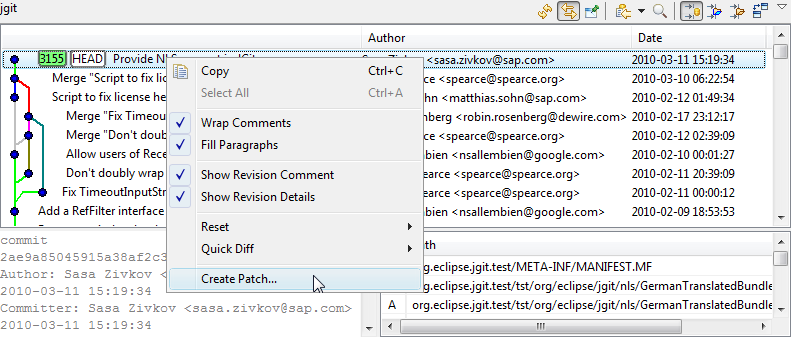
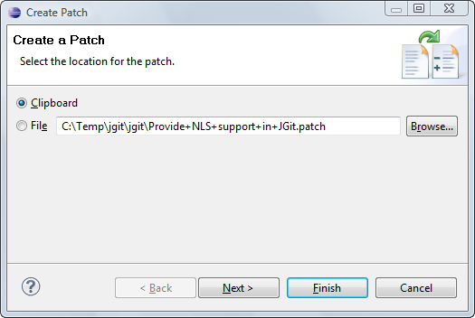

| Patches | ||
|---|---|---|
|
|
|
|
| Tags | Managing Repositories | |
"A patch is a piece of software designed to fix problems with, or update a computer program or its supporting data" (wikipedia). A patch file contains a description of changes of a set of resources which can be automatically applied to another eclipse workspace or git repository.
The patch formats used by eclipse (Team > Apply Patch) and by git (git apply or git am on the command line) are different. It is possible to create both types of a patch in EGit.
This is the most common use case for a distributed versioning system. A developer commits a change on a local feature or bugfix branch and wants to export this change into a patch file.
It can be done from the history view:

The patch file will contain the difference between the commit and its parent in the history view. Note that the filter of the history view applies also for patch creation.
The Wizard consists of two pages. Page one lets you select the location of the patch:

The name of the patch file is created from the first line of the commit message.
On the second page you can change the patch format.
Currently there is one check box: "Export in git patch format".
Currently it s not possible to apply patches in git format. It is possible to apply patches using the standard eclipse format using Team > Apply Patch...
|
|

|
|
| Tags | Managing Repositories |